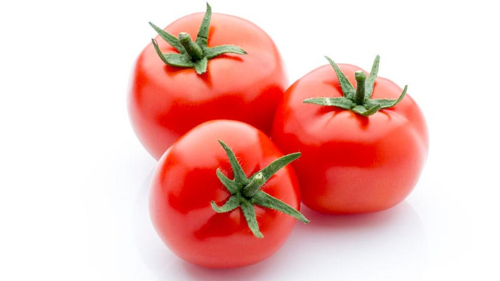

Pertumbuhan tomat akan berjalan secara optimal
jika memenuhi syarat pertumbuhan seperti di bawah ini [32] :
a. Iklim
Tanaman tomat dapat tumbuh di daerah tropis maupun subtropis.
Curah hujan yang dikehendaki dalam pelaksanaan budidaya tomat ini ialah
sekitar 750-1.250 mm/tahun. Keadaan tersebut berhubungan erat dengan
ketersediaan air tanah bagi tanaman,
terutama di daerah yang tidak terdapat irigasi teknis.
Curah hujan yang tinggi juga dapat menghambat persarian.
Kekurangan sinar matahari dapat menyebabkan tanaman tomat
mudah terserang penyakit, baik parasit maupun non-parasit.
Sinar matahari berintensitas tinggi akan menghasilkan vitamin C dan
karoten (provitamin A) yang lebih tinggi.
Penyerapan unsur hara yang maksimal oleh tanaman tomat akan
dicapai apabila pencahayaan selama 12-14 jam/hari,
sedangkan intensitas cahaya yang dikehendaki adalah 0,25 mj/m2 per jam.
b. Suhu
Kisaran temperatur yang baik untuk pertumbuhan tomat ialah antara 20-27ºC.
Jika temperatur berada lebih dari 30ºC atau kurang dari 10ºC,
maka akan mengakibatkan terhambatnya pembentukan buah tomat.
c. Kelembaban
Kelembaban relatif yang baik untuk pertumbuhan tanaman tomat ialah 25%.
Keadaan ini akan merangsang pertumbuhan untuk tanaman tomat
yang masih muda karena asimilasi CO2 menjadi lebih baik
melalui stomata yang membuka lebih banyak.
Akan tetapi, kelembaban relatif yang tinggi juga dapat
merangsang mikroorganisme pengganggu tanaman.
d. Media Tanam
Secara umum, tanaman tomat dapat ditanam di segala jenis tanah,
mulai dari tanah pasir sampai tanah lempung berpasir yang subur,
gembur, berporus, banyak mengandung bahan organik dan unsur hara,
serta mudah merembeskan air. Tingkat kemasaman tanah (pH)
yang sesuai untuk budidaya tomat ialah berkisar 5,0-7,0.
Akar tanaman tomat rentan terhadap kekurangan oksigen.
Oleh karena itu, tanaman tomat tidak boleh tergenangi oleh air.
Dalam pembudidayaan tanaman tomat,
sebaiknya dipilih lokasi yang topografi tanahnya datar
sehingga tidak perlu dibuat teras-teras dan tanggul.
e. Ketinggian Tempat
Tanaman tomat dapat tumbuh di berbagai ketinggian tempat,
baik di dataran tinggi maupun di dataran rendah,
tergantung varietasnya. Tanaman tomat yang sesuai
untuk ditanam di dataran tinggi, misalnya varietas Kada,
sedangkan varietas yang sesuai ditanam di dataran rendah,
misalnya varietas Intan, varietas Ratna, varietas LV,
dan varietas CLN. Selain itu, ada varietas tanaman tomat
yang cocok ditanam di dataran rendah maupun di dataran tinggi,
antara lain varietas tomat GH 2, varietas tomat GH 4,
varietas Berlian, dan varietas Mutiara.
Sumber : https://ulyadays.com/tanaman-tomat/